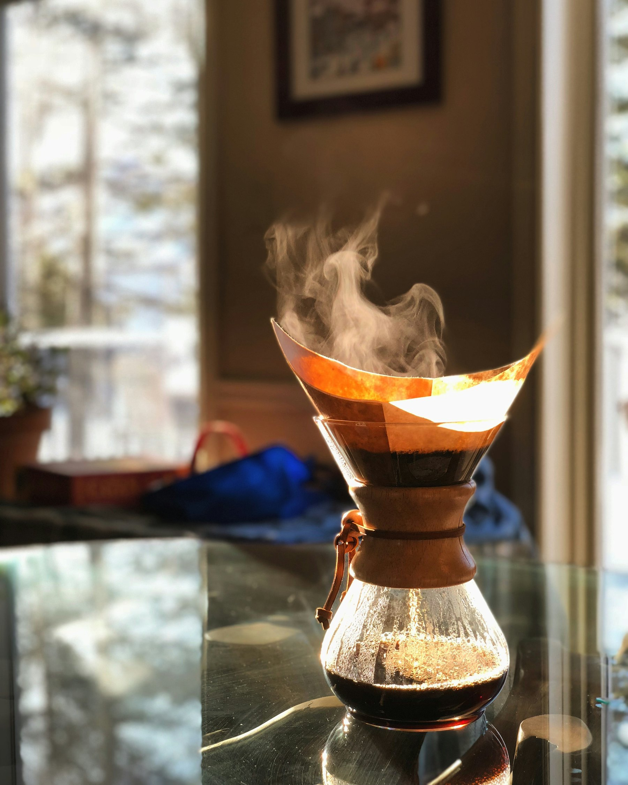
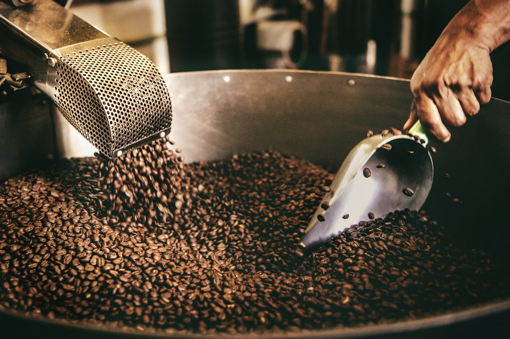
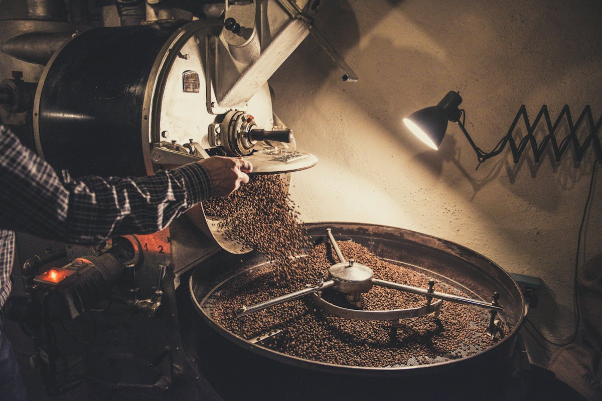
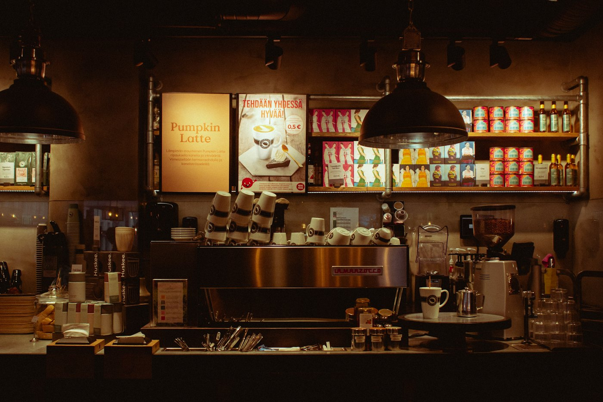

EtiyopyaNo. 01
Guji
Bergamot · şeftali · yasemin
- Rakım
- 1.950–2.200 m
- İşlem
- Yıkanmış
- Demleme
- V60, Chemex
Kavrum
250 g420₺

Çekirdeklerimizi her pazartesi dükkânın arkasındaki kavurma makinesinde küçük partiler hâlinde kavuruyoruz. Fincanınıza gelen kahve en fazla yedi günlük.
Üç köken, üç farklı karakter. Hepsini barda demleyebilir ya da 250 g paket olarak alıp evde öğütebilirsiniz.
Pazartesi sabahları kapıdan girerken kokusunu alırsınız. Her parti 5 kilo; tadım masasında denenmeyen hiçbir parti bara çıkmaz.


